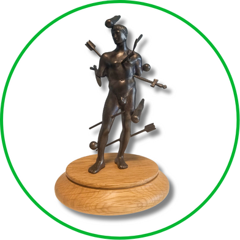
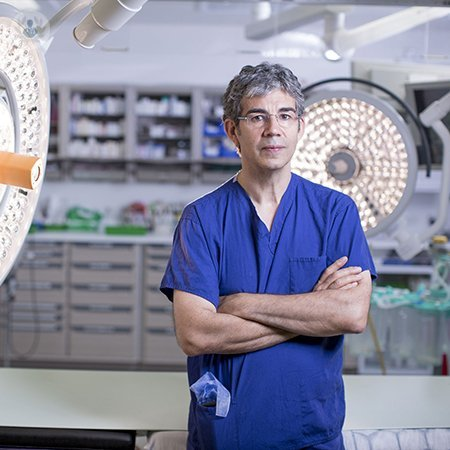

About us
Trauma Care Fellowship
Established in 2020 to recognise exceptional contributions to trauma victim care.
The award
The Trauma Care Fellowship Award
The Trauma Care Fellowship was established in 2020 to recognise exceptional contributions to trauma victim care. Criteria include academic and clinical excellence, innovation, and service development.
The award is not limited by borders, as it is intended for those whose contribution to trauma care, whether on a national or global scale, has been truly outstanding.
Each fellow will receive a bronze of the famous medieval “Wound Man”, specially commissioned by Trauma Care.

Recipients
Trauma Care Fellows
Our Trauma Care Fellows, starting from 2020.
-
2025 Fellow
Dr Roderick MacKenzie
Dr Roderick MacKenzie is a Consultant in Emergency Medicine and Pre-Hospital Emergency Medicine at Cambridge University Hospitals. He is also the Clinical Director of the East of England Major Trauma Centre at Addenbrooke’s Hospital and an Air Ambulance flight physician with Magpas Air Ambulance.
He has over 20 years’ experience of the delivery of emergency medical care and the organisation of emergency medical services across the full spectrum of presentations and incidents, both in and out of hospital.
Dr MacKenzie was the national lead for Emergency Medicine and is the current Chairman of the Intercollegiate Board for Training in Pre-Hospital Emergency Medicine.
In addition to his NHS clinical practice, he has experience of providing expert opinion in relation to clinical negligence claims related to Emergency Medicine, Air Ambulance and Ambulance care. His academic interests relate to injury prevention and control and the role of human factors in errors in emergency health care.
-

2024 Fellow
Professor Timothy J Coats
Professor of Emergency Medicine, University of Leicester, UK
Tim Coats trained in Emergency Medicine in Leeds and London, developing a particular interest in pre-hospital trauma care, and completing an MD thesis in 1996 on the use of AI methods to incorporate patterns of change in physiology in a predictive model of outcome following injury. He trained in pre-hospital care with the London Helicopter Emergency Medical Service from 1990 to 1996.
Following being appointed as a Senior Lecturer at Barts and The London in 1996, with consultant responsibility for the London HEMS service, he moved to the University of Leicester as Professor of Emergency Medicine in 2003. He is a past Chair of the College of Emergency Medicine Research Committee, past Chair of the NIHR National Specialist Group for Injuries and Emergencies, and past Chair of the Trauma Audit and Research Network (TARN). In 2022, he became a NIHR Senior Investigator. His research interests are changes in coagulation following major trauma, artificial intelligence in healthcare “big data” applications, and patient-reported outcomes after major trauma.
You can find him on X at @tjcoats (opens in a new tab).
-
2023 Fellow
Mr Martin P Griffiths
CBE DL FRCS FFSTEd FRSA
Martin P Griffiths is a consultant Trauma and Vascular Surgeon at Barts Health NHS Trust, where he developed the nation’s first ward-based intervention programme for the victims of interpersonal injury.
He is also National Clinical Director for Violence Reduction (NHS England) and Clinical Director for the Violence Reduction Network (NHS London), and has led the expansion of the public-health approach to violence reduction in the capital. He has an interest in integrating peer groups in the co-design of community and healthcare-based prevention and education programmes.
He is an ambassador to the Mary Seacole Trust, a Charlton Athletic Community Trust Trustee, Vice-President of the Hope Collective, and is a Deputy Lieutenant of Greater London.
Clinically, he remains an active trauma surgeon and trainer, teaching on multiple RCS courses, and is the Director of Medical Education at Barts Health as an examiner for the FRCS.
-

2023 Fellow
Professor Sir Keith Porter
Professor Porter was educated at Marlborough College and St Thomas’s Hospital, London. He was appointed Consultant Trauma Surgeon at Birmingham Accident Hospital in 1986, a service that is now delivered at Queen Elizabeth Hospital Birmingham, where he was the Clinical Director of the Major Trauma Centre from 2010 to 2018 and Professor of Clinical Traumatology until February 2023.
He was the clinical lead for injured soldiers returning to the UK for the last decade, including both the Iraq and Afghanistan wars.
Professor Porter has been a leader in the development of the new medical subspecialty of Pre-Hospital Emergency Medicine and in recent years has been the Chairman of the Faculty of Pre-Hospital Care and also the Intercollegiate Board for Training in Emergency Medicine. He is the Honorary Secretary of Trauma Care and until recently the co-editor of the journal Trauma.
Professor Porter has over 200 peer-review publications and has co-authored and edited numerous books.
For his services to the military, he was knighted in the 2010 Queen’s New Year’s honours list.
-
2022 Fellow
Professor Karim Brohi
FRCS FRCA
Karim Brohi is the clinical director of the London Major Trauma Network, Professor of Trauma Sciences at Queen Mary University of London (QMUL) and a consultant vascular and trauma surgeon for Barts Health NHS Trust at the Royal London Hospital. He was founding director of the Centre for Trauma Sciences, and Director of the pan-faculty Crisis Prevention, Management and Recovery Network. He is also a Non-Executive Director of the London Ambulance Service NHS Trust.
At QMUL, Professor Brohi founded the MSc in Trauma Sciences programme at the Centre for Trauma Sciences. Professor Brohi is very active in trauma education through online media and as a keynote speaker at many events both in the UK and overseas.
Professor Brohi founded the website Aftertrauma.org (opens in a new tab) in order to provide research and resources to individuals and family members who have been affected by injury and trauma.
Professor Brohi’s research has focused on the human biological response to injury, and especially critical bleeding and its effects. His work on failure of blood clotting after injury has led to very significant changes in the management of bleeding over the past decade. He coined the term “acute traumatic coagulopathy” to describe how coagulopathy caused by traumatic injury results in more severe bleeding and organ failure.
Professor Brohi was instrumental in the development of the London Major Trauma System in 2010, and has been its clinical director since 2016. In 2018, Professor Brohi received the American Heart Association’s Lifetime Achievement Award for Resuscitation Research for this work.
-
2021 Fellow
Professor David A Alexander
MA(Hons), CPsychol, PhD, (Hon)DSC, FBPS, FRSM, (Hon)FRCPsych
David Alexander was Emeritus Professor of Mental Health at Robert Gordon University (RGU) in Aberdeen. He undertook specialist postgraduate training at the Universities of Aberdeen and Birmingham and at the FBI Academy, USA.
In 1988, he led the psychiatric team following the Piper Alpha oil platform disaster and subsequently established the regional traumatic stress clinic at Royal Cornhill Hospital, Aberdeen. In 1999, he founded the Aberdeen Centre for Trauma Research (ACTR). His expertise was regularly sought in the wake of many major incidents and disasters worldwide, including the 1998 Nairobi terrorist bombing, the Sikorsky S76 helicopter crash in 2002, the crash of the British Antarctic Survey Super Puma helicopter in 2002 and the Indian Ocean tsunami of 2005.
He acted as advisor in mental health to the governments of Nigeria, Pakistan (following the Kashmir earthquake) and Turkey, and visited Iraq to advise on mental health capability at the request of the Royal College of Psychiatrists.
In 2017, he was awarded a Doctor of Science by Abertay University in recognition of his distinguished career.
-

2020 Fellow
Professor David Nott OBE
Professor Nott is a Consultant Surgeon at St Mary’s Hospital London.
For more than twenty-five years, he has taken unpaid leave each year to work for the aid agencies Médecins Sans Frontières, the International Committee of the Red Cross and Syria Relief, providing surgical treatment to patients in Bosnia, Afghanistan, Sierra Leone, Liberia, Ivory Coast, Chad, Darfur, Yemen, the Democratic Republic of Congo, Haiti, Iraq, Pakistan, Libya, Syria, Central African Republic, Gaza and Nepal.
He has raised hundreds of thousands of pounds for charitable causes and teaches advanced surgical skills to local medics and surgeons when he is abroad.
In 2015, Professor Nott and his wife established the David Nott Foundation, which supports surgeons in developing their operating skills for warzones and austere environments.
He was awarded an OBE in 2016. In 2019, Picador published David’s memoir, War Doctor.